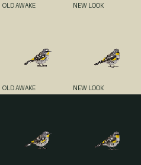
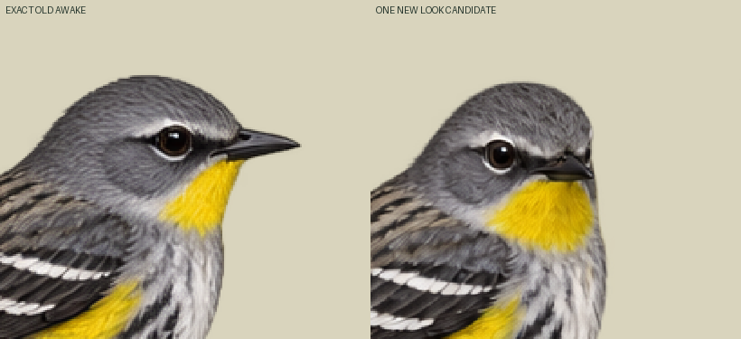
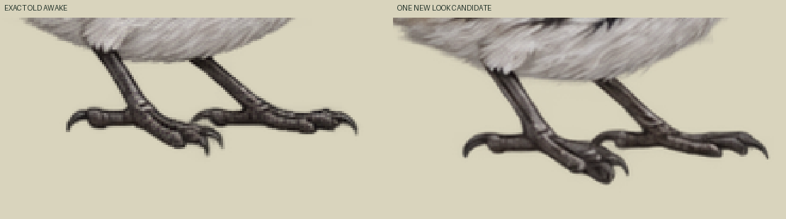

Existing adult male Audubon yellow-throated cool-season identity retained. One native drawing, zero new neutral/blink/seasonal canon. Initial source status held/unbound: second inherited foot marker is transparent; no new foot contacts admitted. Actual head/body/toe compatibility needs independent normal-size review.
Normal canvas119.35135135135135CSS/world,96-square output,density37/46,pivot57,75. Exact old bird46world wide; new shorter-bill envelope43.514world. Full native1254→96 nearest only, no body-envelope fit, translation, painting or foot snap. Old probes56,74 and60,73 have alpha201/248; new same pixels236/0. New contacts[] is deliberate, with actual positive toe-region probes separate in sidecar. New footprint/feather redraw is visible, not hidden by alpha equality. Physical perch/ground support remains unapproved.
Authored one-shot30Hz: awake30ticks→look12ticks→exact awake30ticks. Two unique poses, no generated head-turn intermediates or smoothness claim. Requested25–35° yaw is art direction, not measured anatomy. Idle uses only unchanged awake. New toes/body native redraw remains for review.



Loading exact source atlas…
Unreviewed candidate, activation none, packetBindingReady false, appBound false. Canonical Zod/Sharp NOT_RUN/current Mac named-look UNKNOWN. Existing awake/blink stays authoritative. No biological timing, supportWorld or runtime-ready claim.